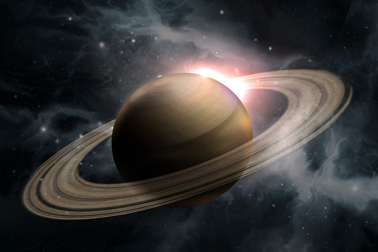
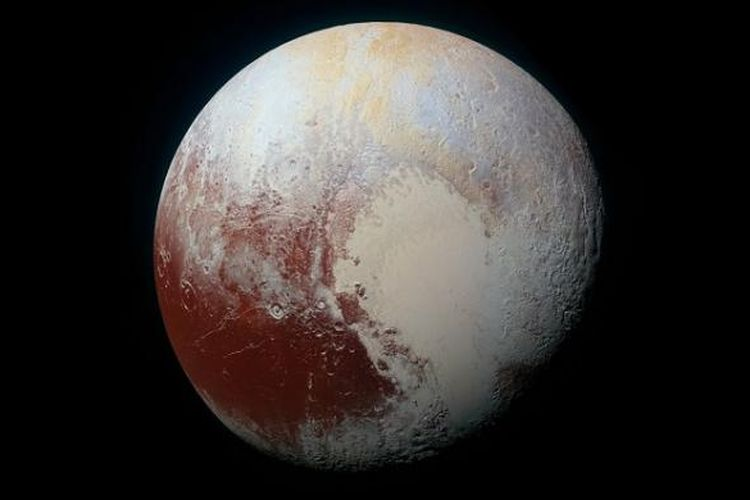

SATURNUS
Saturnus adalah planet keenam dari Matahari dan merupakan planet terbesar kedua di Tata Surya setelah Jupiter. Saturnus juga merupakan sebuah raksasa gas yang memiliki radius rata-rata sekitar 9 kali radius rata-rata Bumi.
JUPITER

Jupiter atau Yupiter adalah planet terdekat kelima dari Matahari setelah Merkurius, Venus, Bumi, dan Mars. Planet ini juga merupakan planet terbesar di Tata Surya. Jupiter merupakan raksasa gas dengan massa seperseribu massa Matahari dan dua setengah kali jumlah massa semua planet lain di Tata Surya.
PLUTO
Pluto adalah planet katai di sabuk Kuiper dan objek trans-Neptunus pertama yang ditemukan. Pluto merupakan planet katai terbesar dan bermassa terbesar kedua di Tata Surya dan benda terbesar kesembilan dan bermassa terbesar kesepuluh yang mengorbit Matahari secara langsung.